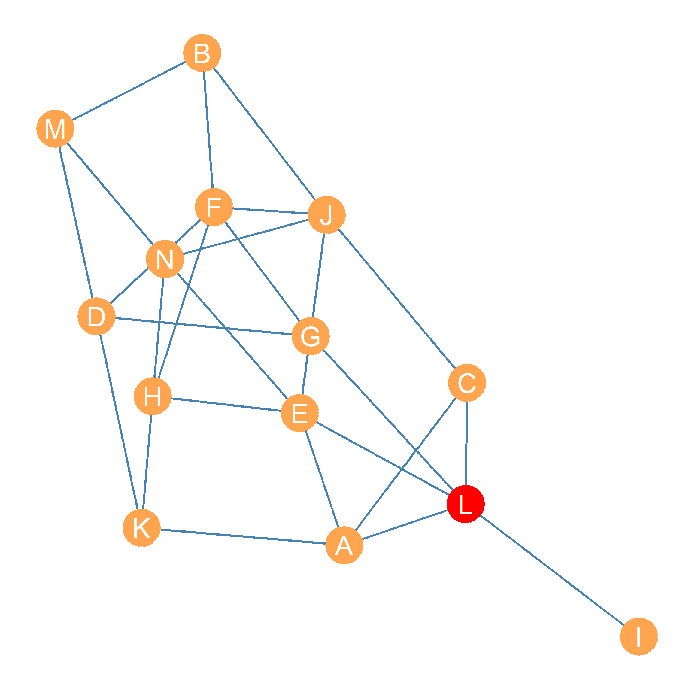

22 Centralities based on Shortest Paths
Recall that in our discussion of shortest paths between pair of nodes in sec-indirect, we noted the importance of the inner nodes that intervene or mediate between any one node in the graph that wants to reach another one. Nodes that stand in these brokerage or gatekeeper slots in the network (Gould and Fernandez 1989), occupy an important position (Marsden 1983), and this is different from having a lot of contacts (like degree centrality; see sec-degcent), or being able to reach lots of other nodes by traversing relatively small distances (like closeness centrality; see sec-closcent).
Instead, the kind of centrality we are talking about is about being in-between the indirect communications of other nodes in graph. In this chapter we discuss some centrality metrics designed to capture the extent to which nodes serves as intermediaries between other nodes in a social network.
22.1 Stress Centrality
For instance, let’s say you were actor \(K\) in the network shown in Figure fig-bet, and you wanted to know who is the person that you depend on the most to communicate with actor \(J\). Here dependence means that you are forced to “go through them.” One way \(K\) could figure this out is by listing every shortest path having them as the origin node and having \(J\) as the destination node.
After you have this list, you can see which of other other nodes shows up as an inner node—an intermediary or gatekeeper—in those paths the most times. Remember that two actors can be indirectly linked by multiple shortest paths of the same length.
This shortest path list between \(K\) and \(J\) would look like this:
\(\{KH, HF, FJ\}\)
\(\{KD, DF, FJ\}\)
\(\{KH, HN, NJ\}\)
\(\{KA, AC, CJ\}\)
\(\{KA, AE, EJ\}\)
\(\{KH, HE, EJ\}\)
As the list shows, there are six shortest paths (in this case of length \(l = 3\)) indirectly connecting actors \(K\) and \(J\) in Figure fig-bet, with nodes \(\{A, C, D, E, F, H, N\}\) showing up as an inner node in at least one of those paths.
To see which other actor in the network is the most frequent intermediary between \(K\) and \(J\), we can create a list with the number of times each of these nodes shows up as an inner node in the shortest path list shown earlier. We will call each of these numbers \(n_{K(x)J}\), where the little \(x\) in parentheses in-between the little \(K\) and the little \(J\) indicates the inner node we are talking about. For instance, \(n_{K(A)J}\) refers to the number of times node \(A\) stands on a shortest path linking \(K\) and \(J\), and so forth for each of the nodes in the inner node set \(\{A, C, D, E, F, H, N\}\).
Using the the shortest path list mentioned earlier, the table containing this information would look like that shown in Table tbl-pairdep.
| Node | Freq. | Prop. |
|---|---|---|
| A | 2 | 0.33 |
| C | 1 | 0.17 |
| D | 1 | 0.17 |
| E | 2 | 0.33 |
| F | 2 | 0.33 |
| H | 3 | 0.50 |
| N | 1 | 0.17 |
Table 22.1: Intermediaries between nodes J and K
So it looks like, looking at the second column of Table tbl-pairdep, that \(H\) is the other actor that \(J\) depends on the most to reach \(K\), since they show up three times in the paths linking \(K\) and \(J\) (\(n_{K(H)J} = 3\)) beating out all the other nodes.
We can use this information—aggregated across all pairs of nodes in the graph for every other node—to construct a centrality metric. That is, for each node in the graph \(k\) we can ask how often they show up as an intermediary between every other pair of nodes in the graph \(i\) and \(j\) and then we sum up this quantity across all pairs. This centrality index was first proposed by Alfonso Shimbel (1953) and it is called the stress centrality.
In equation form you write the stress centrality index like this:
\[ C^{STRESS}_k = \sum_{i \neq k} \sum_{j \neq k} n_{i(k)j} \tag{22.1}\]
Which says that the stress centrality of node \(k\) is the sum of the number of times they stand in a shortest path between each pair of nodes in the graph, excluding the pairs that include \(k\) as either a starting or ending node in the path connecting them (recall that \(i \neq k\) means “\(i\) does not equal \(k\)” in English).
| A | B | C | D | E | F | G | H | I | J | K | L | M | N |
|---|---|---|---|---|---|---|---|---|---|---|---|---|---|
| 22 | 6 | 16 | 26 | 48 | 40 | 22 | 28 | 0 | 48 | 20 | 50 | 12 | 22 |
Table tbl-stress shows the results of computing the stress centralities for all the nodes in Figure fig-bet. It is clear that according to this metric, nodes \(E\) and \(J\) win out, standing in the middle of a whopping \(n_{i(E)j} = n_{i(J)j} = 48\) shortest paths between other nodes in Figure fig-bet. Node \(I\) receives a stress centrality score of \(n_{i(I)j} = 0\) because they are not an inner node between any other pair of nodes.
22.2 Betweenness Centrality
While Shimbel’s Stress Centrality idea goes a long way to capturing the idea of who the most intermediary nodes are, it can be improved upon. This is what was noted by Anthonisse and later Linton Freeman in a landmark series of papers, where they developed a centrality metric aimed to measure node intermediation called betweenness centrality (Anthonisse 1971; Freeman 1977, 1980)
The basic observation behind betweenness centrality is pretty simple. It rests on the idea that rather than counting the raw number of shortest paths a particular node sits on as an inner node, it is better to look at the percentage (or proportion) of such paths.
Let us return to our earlier example featuring nodes \(K\) and \(J\) as the end nodes. To measure the proportion of shortest paths featuring nodes in the inner node set \(\{A, C, D, E, F, H, N\}\) standing between \(K\) and \(J\), we simply take \(n_{K(x)J}\) and divide it by the total number of shortest paths between \(K\) and \(J\). We will call this quantity \(n_{KJ}\), and we already noted from the list we constructed before that was \(n_{KJ} = 6\). The new quantity that results from dividing up \(n_{K(x)J}\) (for any \(x\)) by \(n_{KJ}\) we will call \(p_{K(x)J}\) where the \(p\) is a shorthand for the proportion of paths between \(K\) and \(J\) featuring node \(x\) as an inner node.
For instance, let’s say we wanted to calculate \(p_{K(x)J}\) for node \(H\), written \(p_{K(H)J}\). We can write this in equation form like this:
\[ p_{K(H)J} = \frac{n_{K(H)J}}{n_{KJ}} = \frac{3}{6} = 0.5 \tag{22.2}\]
Just as before, in Equation eq-pairdep, \(n_{K(H)J}\) is the number of shortest paths linking \(K\) and \(J\) featuring \(H\) as an inner node, and \(n_{KJ}\) is the total number of shortest paths linking \(K\) and \(J\). In this case, \(n_{K(H)J} = 3\) and \(n_{KJ} = 6\), which means that actor \(K\) depends on actor \(H\) for fifty percent of their shortest path access to \(J\). Making \(H\) the actor in the network \(K\) depends on the most to be able to reach \(J\). The third column of Table tbl-pairdep shows the \(p_{K(x)J}\) scores for all the nodes in the inner node set \(\{A, C, D, E, F, H, N\}\) standing between \(K\) and \(J\). Freeman (1980) calls the measure in Equation eq-pairdep the pair-dependency of actor \(K\) on actor \(H\) to reach a given node \(J\).
Generalizing this approach, we can do the same for each triplet of actors \(i\), \(j\), and \(k\) in Figure fig-bet This is the basis for calculating betweenness centrality. That is, we can count the number of times \(K\) stands on the shortest path between two other actors \(i\) and \(j\), we can then divide it by the total number of shortest paths linking actors \(i\) and \(j\) in the network. As noted, this ratio gives us the proportion of shortest paths in the network that have \(i\) and \(J\) as the end nodes and that feature \(K\) as an intermediary inner node, which we can call \(p_{i(k)j}\). In equation form:
\[ p_{i(k)j} = \frac{n_{i(k)j}}{n_{ij}} \tag{22.3}\]
For each node triple in the graph, \(p_{i(k)j}\) can range from zero (no shortest paths between \(i\) and \(j\) feature node \(k\) as an intermediary) to one (all the shortest paths between \(i\) and \(J\) feature node \(k\) as an intermediary). Equation eq-pk can also be interpreted as giving us the probability that if we were to select a random shortest path among the ones that link nodes \(i\) and \(j\), we would find \(k\) in the middle of it.
We can then use the following equation to compute the sum of these proportions for each node \(k\) across each pair of actors in the network \(i\) and \(j\). This gives us the total betweenness centrality of any node \(k\) in the graph:
\[ C_k^{BET} = \sum_{i \neq k} \sum_{j \neq k} p_{i(k)j} \tag{22.4}\]
Computing this sum for each node in the graph shown in Figure fig-bet, yields the betweenness centrality scores shown in Table tbl-bet.
| A | B | C | D | E | F | G | H | I | J | K | L | M | N |
|---|---|---|---|---|---|---|---|---|---|---|---|---|---|
| 5 | 1.5 | 3 | 6.8 | 11.4 | 9.3 | 6.3 | 4.8 | 0 | 10.8 | 3.7 | 16.4 | 2.8 | 5.3 |
In Equation eq-betcen, the betweenness centrality of a node \(k\) goes up by one whole point if they are they can be found as an inner node in all the shortest paths indirectly linking \(i\) and \(j\), otherwise the sum goes up by a quantity (larger than zero but less than one) that is equal to the proportion of the paths between \(i\) and \(j\) that \(k\) stands on.
Interestingly, as shown in Figure fig-bet, the node that ends up with the highest betweenness score is \(L\) (\(C_L^{BET} = 16.4\)), which is different from the result we got using the stress centralities scores in Table tbl-stress. This is mostly due to the fact that node \(i\), who has the lowest possible betweenness score of zero, depends on this node for access to every other actor in the network.
Note also that two different nodes end up being ranked first on closeness—as we saw in sec-closcent—and betweenness centrality in the same network (compare the red nodes in Figure fig-clos and Figure fig-bet). This tells us that closeness and betweenness are analytically distinct measures of node position. One (closeness) gets at reachability, and the other (betweenness) gets at intermediation potential.
References
Anthonisse, Jac M. 1971. “The Rush in a Directed Graph.” Stichting Mathematisch Centrum. Mathematische Besliskunde, no. BN 9/71.
Freeman, Linton C. 1977. “A Set of Measures of Centrality Based on Betweenness.” Sociometry 40 (1): 35–41.
———. 1980. “The Gatekeeper, Pair-Dependency and Structural Centrality.” Quality and Quantity 14 (4): 585–92.
Gould, Roger V, and Roberto M Fernandez. 1989. “Structures of Mediation: A Formal Approach to Brokerage in Transaction Networks.” Sociological Methodology 19: 89–126.
Marsden, Peter V. 1983. “Restricted Access in Networks and Models of Power.” American Journal of Sociology 88 (4): 686–717.
Shimbel, Alfonso. 1953. “Structural Parameters of Communication Networks.” The Bulletin of Mathematical Biophysics 15: 501–7.